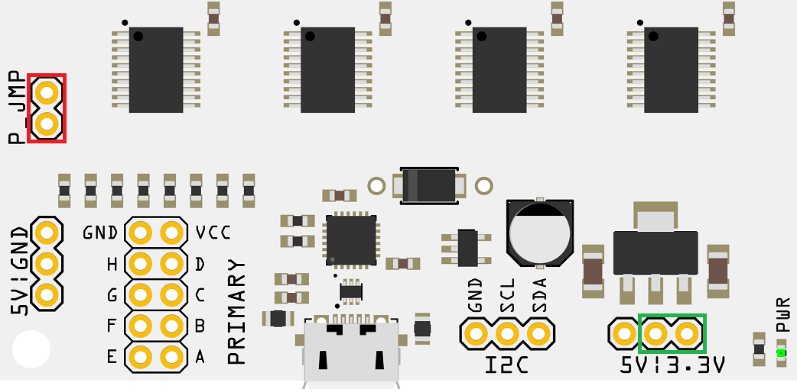
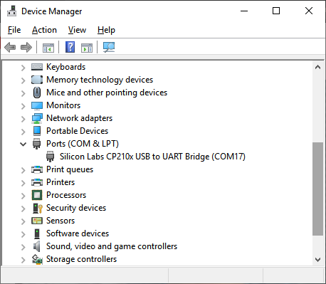
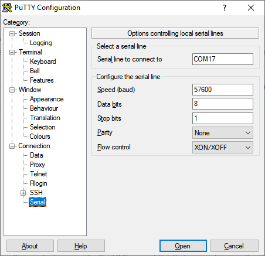
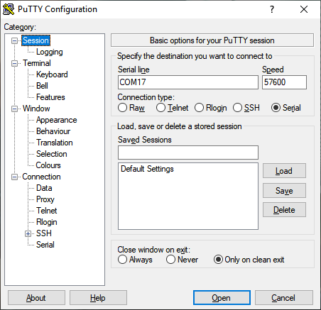
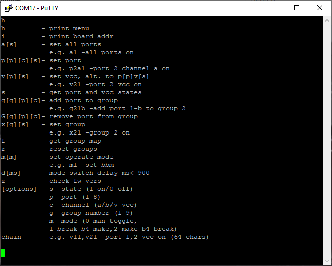

Port MuxR Getting Started
The following is a quick start guide on how to connect to the Port MuxR via the USB serial connection under Windows. The guide also verifies the basic operation of the device.
Step 1
Make sure the voltage select pins are set to a voltage preset with a header (shown in green below). Also make sure the P_JMP pins have a header installed (shown in red below).
Step 2
Connect a micro USB cable to the micro USB port on the Port MuxR and plug into your computer.
Step 3
Verify the COM port of the device by opening Device Manager/devmgmt.msc (in Linux you can run "dmesg | grep ttyUSB" without quotes):
Step 4
Open Putty and navigate to the Serial tree item. Change the settings as shown (be sure to change the COM number to the one from your Device Manager window):
Step 5
Change to the Session tree item (and you can save the profile if you like for later), then make sure the Serial radio button is checked and click Open:
Step 6
Verify the connection to the device by pressing h then Enter:
Step 7
A menu should appear if everything is working. Once the menu appears, you can type a1 then enter (to turn all switches on). The LEDs next to each of the slave ports should illuminate.